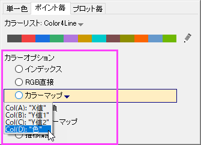
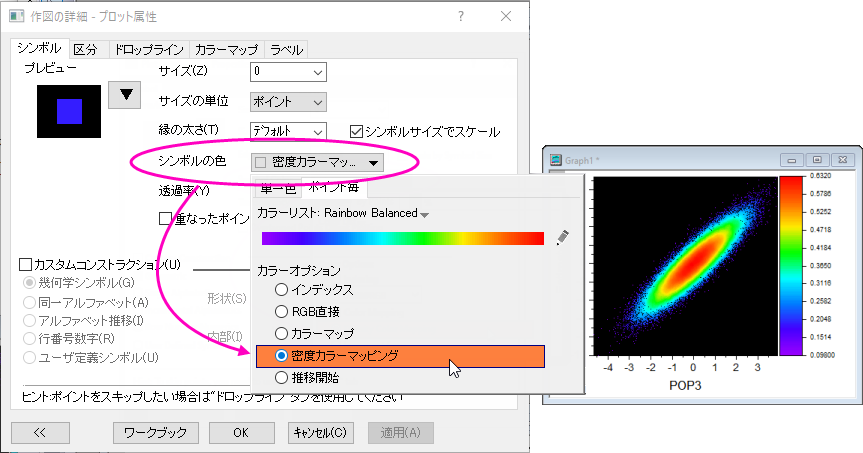

データプロットの色を編集する
Customize-PlotColor
Originでデータプロットの色を「編集」する際、既存のグラフのデフォルトのプロットの色の割り当てを変更することできます。また、まだ作成されていないグラフで使用するためのカスタムカラーリストの作成をすることもできます。どちらか一方について議論するのは難しいので、このページでは「編集」の広い定義を想定しています。
既存のグラフの配色を積極的に変更している場合は、カラーチューザーというものにすぐに慣れることができます。それが私たちが議論する最初のトピックです。
このページで述べられるトピックに加えて、プロット色の編集に関する情報のページを参照されると良いでしょう。
カラーチューザーを開く
カラーチューザーは、アクティブなグラフウィンドウでプロットの色を編集するための入り口です。いくつかの方法で開きことができます。
- プロットをクリックし、ミニツールバーの色に関連するボタンを選択する。
- プロット上でダブルクリックして作図の詳細を開き、特定の要素のカラーボタンを使用して色の編集を開始します（例：塗り色）。
- プロットをクリックし、書式ツールバー（ワークスペースの上部にあります）で色に関連するボタンを選択します。
|
|
サンプルプロット
|
作図の詳細 色ボタンまたはツールバーボタン
|
カラーチューザービュー
|
| 単一色のプロットエレメント
|
|

- または、

- または...
|
関連トピック：
作図の詳細：「シンボル」タブでの制御
|
プロットを様々な色に設定
ポイント毎
|
|
- または、
- または...

|
関連トピック：
|
プロットを様々な色に設定
プロット毎
|
|
- または、

- または...

|
関連トピック：
|
 | - システム変数「@RGBS」を「1」にに設定すると、カラーリストボタンに、HTMLカラーコードの代わりに、RGBの値を表示するように切り替えることもできます。
- 関数color()を使用すると、指定したHTMLカラーコードに対応するRGB合成値を返すことができます。
|
カスタムカラーの定義と使用
初期設定のカラーリスト
Originには、非常に基本的な編集不可能な「システム」カラーリストがあります。これは、背景にある互換性や、プログラム的な色の割り当てのために保持されています。そのカラーリストは、LabTalkリファレンス表の、List of Colors にあります。
GUIで操作するユーザは、カラーチューザーとカラーマネージャの両方がOriginの多数の組み込みカラーリストにアクセスできるため、このカラーリストを考える必要はありません。いずれも、\User Files\Themes\Graph フォルダに 推移リスト（.oht）として、編集し保存することが 出来ます。さらに、Originは、標準的なカラーパレットファイルのドラッグアンドドロップなど、ソフトウェアにカスタムカラーリストを追加するための他のいくつかの方法をサポートしています。
| 論文などを公開する際に、カラー（例えばオンライン用）と白黒（例えば印刷用）の両方の画像が生成されるカラー画像を提出するよう求められることがあります。カラーリストが十分なプロット差異を表していることを確認するために、グレースケールでプレビューできます。ファイル：印刷プレビューを選択し、グレースケールボタンをクリックします。
|
カスタムカラーの定義
この方法は、現在のプロットで使用する1つまたはいくつかのカスタムカラーを作成するのに便利です。後で使用するために保存する一連のカスタムカラーを選択する方法については、次のトピックを参照してください。
- 単一のカスタムカラーを定義するには、カラーチューザを開き、単一色タブをクリックします。
- カスタム の下にある、空の色をクリックし、カラー ダイアログで、 カスタム タブを開きます。
- 次のいずれかにより色を選択します。
- 色の選択に、クロスヘアとスライダーを使います。
- 目薬マーク（スポイトみたいな）マークをクリックして、Originワークスペースの別の場所にある箇所の色をクリックで拾います。
- 編集ボックスにRGB, HSL値または色のHTML（hex）を入力します。
- 必要に応じて、ユーザ定義の色の名前を入力します（名前がない場合、GUIは16進数カラーコードを表示します）。
- 終了したら、カスタムに追加をクリックします。
- また、目薬マーク（スポイトみたいなマーク）をクリックして、ワークスペースの別の場所にある箇所の色をクリックで拾います。
上記で選択した色が、カラーチューザーのカスタム グループに追加されます。 必要に応じて、さらに色を追加します。カスタムに追加ボタンを使用すると、カラーダイアログを閉じなくても、色を順番に追加できることに注意してください。
他の事項：
- 既にあるカスタム カラーを修正する場合は、その色の上でCtrlキーを押しながらクリックし、カラーダイアログを開きます。
- 既に適用されているカスタムカラーを修正する場合は、カスタムグループの中にある、空になった色をクリックし、使用可能な設定項目（十字線、スライダー、RGBなど）を使用して変更します。
- カスタムと最近使った色 にある色は、自動的にセッションをまたいで保存されます。（例：次にOriginを起動した場合でも、それらの色は表示されます。）
- グループとして一連のカスタムカラーを割り当てる（例：プロットのポイント毎に、色を推移させる）には、それらを、次の推移リスト に保存しなければなりません。
- カスタムカラーリストを保存する前に、他のカラーリストをロードした場合は、カスタム メニューをクリック、または 前のカスタムカラー を選択し、以前のカラーリストを呼び戻すことができます。
推移リストとして、カスタム色のシリーズを保存
「カラーリスト」と「推移リスト」という語は、Originソフトウェアのドキュメントで同じ意味で使用されることがあります。より正確には、「推移リスト」は、一連のデータポイントまたはプロットに順番に色を割り当てるために使用される単なる「カラーリスト」です。
推移リスト（カラーリスト）を作成するには、いくつかの方法があります。実際の推移リストとして使用する場合でも、マップやインデックスなどによってプロットの色を割り当てる場合でもかまいません。
カラーリストを1つずつ作成する
これは、2つの方法のうちで手間がかかる方法です。Origin 2021以降をお使いの場合、このすぐ下のセクションを参照してください。
- リストとして保存するカスタムカラーを定義する前に、色をクリアしておきたい場合には、カスタムメニューをクリックし、クリア をクリックします。
- 上記の方法で、カラーリストを定義します。
- カスタムカラーのシーケンスで色の選択が完了しましたら、カスタム メニューで、名前を付けて保存 を選択します。
- 推移リストとして保存 ダイアログに名前を入力し、OK をクリックします。Note:このダイアログでドロップダウンリストをクリックすると、現在のセクションを以前に作成したリストに保存することが出来ます。
色の作成ダイアログボックスを使用したリストの作成 (Origin2021以降)
Origin 2021以降、色の作成ダイアログを使用してカラーリストを作成できます。詳細はこのトピックをご確認ください。
| Origin 2021b以降、推移リストエディタは、カラープロパティを編集するための色の作成ダイアログに置き換えられました。色の作成はより多くの機能を提供しますが、推移リストエディタが必要な場合は、システム変数@DICE = 0と設定することで復元できます。システム変数の値を変更する方法については、FAQ-708 システム変数を永続的に変更するにはにあるシステム変数の変更を参照してください。
|
列からカラーリストを作成
プロジェクトで列フォーマットが色に設定されている場合、カラーチューザーのカスタムメニューに列からカラーリストを作成オプションが表示されます。
- 列からカラーリストを作成で色フォーマットの列を選択します。列の色がカスタム色に追加され、推移リストの保存ダイアログが開きます。
- カラーリストに名前を付け、OKをクリックします。
色推移リストとパレットの操作
保存された推移リストを使用
保存したリストは、単一色、ポイント毎、プロット毎の3つのカラーチューザータブのいずれかからロードできます（すべてのプロットに3つのタブすべてが表示されるわけではありません）。
- 単一色: その他の色の右にあるリストコントロール(下矢印)をクリックします。
- カラーリストを選び、さらにその中から1色を選択します。
- ポイント毎: カラーリストの下にあるリストコントロールをクリックします。
- ポイント毎 にカラーが推移する場合は、推移開始 のスライダーで開始位置を変えることが出来ます。色が全てのポイントに適用される前にリストが終わってしまった場合、コードはリストの最初に戻ります。
- プロット毎: 推移リストの下にあるリストコントロールをクリックします。
- カラーチューザーのプロット毎 タブ上、または新しい推移リスト（Q02 Basic以外）を選択した場合、様々なリストが表示されます。これらは、「色合いと陰影」のバリエーションであり、任意のバリエーションを1つクリックして、プロットに適用することができます。この色味と影のバリエーションリストは、単一色のタブからロードすることができますが、このタブでは単色で表示され、適用されます。
色の作成ダイアログ
カラーリスト（組込またはユーザ定義）は、カラーチューザータブからロードして、色の作成ダイアログボックスで編集できます。
推移リストをロード
- 単一色：カスタム メニューをクリックして、推移エディタを開く から、編集することが出来ます。これにより、現在のカスタムカラーのリストが、色の作成ダイアログにロードされます。
- ポイント毎またはプロット毎：カラーリスト（色合い/陰影のバリエーションを含む）上で、CTRLキーを押しながらクリック、またはをクリックしてカラーリストを終了します。これで、色の作成ダイアログでカラーリストまたはパレットが開きます。
推移リストの編集
推移リストを修正するには色の作成ダイアログを使用します。また、新しい推移リストとして保存することもできます。
リストの再配列
- カラーリストの順序を変更するには、反転、上へ移動（一番上へ移動）、上へ移動（1つ上へ移動）、下へ移動（1つ下へ移動）、および下へ移動（一番下へ移動）ボタンを使用します。もしくは、ドラッグによりリストの順序を変更できます。
リストに色を追加する
- 新規として追加ボタン
 もしくはリストを右クリックして追加を選択します。黒（#00000）のセルは、リストの一番下に表示されます。
もしくはリストを右クリックして追加を選択します。黒（#00000）のセルは、リストの一番下に表示されます。
- 追加したセルを編集するには、セルが強調表示されていることを確認してから、RGB/HSL/HTML編集ボックスを使用してカスタムカラーを選択します。または、スポイトを使用してOriginワークスペースで色を選択します。
- 新規/現在のブロックを使用して色を比較します。色が決まったら、置換ボタンをクリックし、黒のプレースホルダーセルを置換します。
リストから色を削除する
- 色を選択して、右の削除ボタン
 をクリックするか、リストの中の色を右クリックし、ショートカットメニューから削除を選択します。
をクリックするか、リストの中の色を右クリックし、ショートカットメニューから削除を選択します。
色の名前を変更する
色の名前は6桁のhtmlカラーコードより、自然な名前を付けたほうがわかりやすいこともあります。
- 色の名前を変更するには、カラーリスト上で右クリックし、名前の変更を選択します（遅いのでお待ちください）。
- セルをクリックすると名前の変更モードに入ります。このモードは、名前の変更の横にあるチェックボックスをオフにするまで有効です。
推移リストの保存
- 色の作成を使用して新しい推移リストを作成した場合は、OKをクリックしてカラーリストを保存し、ダイアログボックスを閉じます。
- 色の作成を使用して推移リストを変更した場合：
- 変更したリストに名前を付けます。元の（変更されていないリスト）を保持するには、新しい名前を入力します。
- OKをクリックする前に、保存をクリックします。保存に失敗すると、変更した結果が失われます。
推移リストは.othファイル形式で、\User Files\Themes\Graph folderに保存されます。保存した推移リストはユーザインターフェイスのどこでも利用可能になり 、テーマオーガナイザでもアクセス可能となります。
パレットの編集
パレットファイルは通常、カラーリストよりも多くのカラーバリエーションを表示しますが、実際に2つを区別するのは、それらの保存方法です。カラーリスト (推移リスト) は User Files\Themes\Graph に .oth files (テーマファイル)として保存されます。パレットファイルは User Files\Palettes に .pal files として保存されます。
編集するパレットをロードする
- メインメニューから、ツール：カラーマネージャを選択し、
- パレットラジオボタンをクリックし、編集可能なパレットを右クリックし（ヒント：システムパレットは編集できませんが、複製して編集することができます）、色の編集を選択します。
他の方法：
- カラーマネージャの一番上での、新規ボタンをクリックします。
- 色の作成ダイアログで、左パネルのリストを右クリックして、パレットをロードします。
パレットの編集
Originの組み込みカラーパレットを編集することはできませんが、パレットをロードして新しい名前で保存することはできます。
- 最も簡単なパレット編集は、編集可能なパレットをロードし、色の作成ダイアログで補間ボタンをクリックすることで行えます。補間タイプと色の番号（256が最大）を指定し、OKをクリックします。
- より複雑な編集を行うには、色の作成のカラーリストを右クリックし、パレットエディタで開くを選択してpalEditダイアログボックスを開きます。
| システム変数@ECDを使用して、上記のステップ2でパレットエディタで開くを選択したときに開くパレットエディタをコントロールできます。
|
.palファイルの編集、保存、インポートについては、これらの項目を参照してください。
列の値を使ってポイント毎に色を適用
カラーチューザーのポイント毎タブでは、プロットのデータポイントに色を適用するためのオプションがあります。基本の方法として、カスタム増分を使い、最初のデータポイントの開始色を設定し、後続のポイントにカラーリストの色を割り当てることができます。保存された推移リストの利用 の「ポイント毎」を参照してください。
その他のオプションは、データセットを使ってプロットに色を付けます（詳細は、データセットの値を使用してデータプロットの色を制御するを参照してください）。
- インデックス: 整数のデータセットまたは、色を適用するためのカテゴリー値を使います。インデックス をご覧ください。
- RGB直接: 色を適用するためのRGB構成値を使います。RGB直接を参照してください。
- カラーマップ: 色を適用するための範囲指定の実数データセットを使用します。カラーマッピング を参照してください。
- 密度カラーマッピング: 密度ドットテンプレートで使用できます。
- 
- Y値: カラーマップ: 1つのグラフに複数のYデータプロットがある場合、それぞれのY値データセットをカラーマップスケール範囲の実数として使用します。 Y値: カラーマップを参照してください。
- Y値: 正-負-合計: 滝グラフでのみ使用できます（マッキンゼースタイルのウォータフォールとも呼ばれます）。データポイントYの値が正、負、合計のいずれであるかに応じて、列/棒の色を塗りつぶします。滝グラフタブの合計/小計のデータインデックスで合計を設定できます。塗りつぶしのカラーシーケンスは、カラーリストの下部に表示されます。Y値: 正-負-合計オプションでは、最初の3つの色だけが使用されます。1番目の色は正、2番目の色は負、3番目の色は合計に割り当てられます。Y値: 正-負-合計を参照してください。
| Ctrlキーを押しながらリストを直接クリックすると、カラーリストの推移色を変更できます。または、リストの右側にある鉛筆アイコンをクリックします。どちらでも色の作成ダイアログが開きます。
|
密度カラーマッピング
密度カラーマッピングはポイント毎オプションの一つです。この設定では、値の列を使用して色を割り当てるのではなく、散布図の点の密度に基づいて色を割り当てます。特に、大規模なデータセットの散布図を作成するための密度ドットテンプレートで使用するためのものです。かなりの数のポイントが重なる散布図でない限り、このオプションは役に立ちません。
- 
| Note: データプロットにカラーマッピング適用すると、作図の詳細ダイアログにカラーマップタブが追加され、このタブでプロットの色付け方法を設定します（シンボルタブでは設定できません）。
|
列ラベル行値を使用してプロットの色を制御
列インデックスを使用してグループ化されたプロットにカラーリストを適用することに加えて、グループ化された2Dグラフでは、1つの列識別子（1つの列ラベル行）の実際の値を使用して、グループ化されたプロットを色分けできます。
カラーマップグループ化プロットで列ラベルの値を使用するには、
- これら全てのY列を2Dグラフとしてプロットします。
- 1つのプロットをクリックしたらポップアップするミニツールバーでグループタブに移動し、塗りつぶしの色、境界色ボタンをクリックしてカラーチューザーを展開します。（プロットをダブルクリックして作図の詳細ダイアログを開き、関連するタブに移動して色ボタンをクリックすることもできます。）
- 列ラベル行ボタンをクリックして、列ラベル行を選択します。次に、展開されたパネルで、色を列ラベル行の値でマップする方法を選択します。
Note: 列ラベル行リストの下のプロットインデックスはプロットのインデックス番号を意味します。Z値はウォーターフォールグラフでのみ使用でき、線の色をZ値ソースオプションで指定された列ラベル行にマッピングするために使用されます。
指定した列ラベル行に納められている値を使用して色をマッピングする方法を選択します。
- インデックス: 選択した列ラベル行の値を使用して、指定カラーリストのグループ化プロットの色をインデックスします。
- RGB直接: 選択した列ラベル行をRGB値のグループとして扱い、グループ化プロットに色を適用します。
- カラーマップ: 選択したZ値と関連する色のスケールとの間にマッピングを作成します。プロットの列ラベル行の値に応じて色が適用されます。
これら3つの手法についての詳細は、「ユーザガイド: データセットでプロット色を設定」のページを参照してください。
＜自動＞カラーとは？
幾つかの色ボタンは自動と、初期設定では表示されています。

＜自動＞がボタン上に表示されている場合は、色はこの方法で適用されます。
| 項目
|
次のような設定になります。
|
|
塗りつぶしパターン
|
境界色
|
|
ドロップラインの色
|
シンボルの色
|
|
シンボルの色
|
(グラフの線の)色。 データプロットに線タブが含まれていない場合は、黒が表示されます。
|
|
シンボル（境界）色
|
(グラフの線の)色。 データプロットに線タブが含まれていない場合は、黒が表示されます。
|
|
(シンボルの)塗りつぶし色
|
オプションダイアログのグラフタブにあるシンボルの塗り色で選択します。
|
|
(エラーバーの)色
|
境界色。 シンボル（散布図、棒など）がない場合、線の色に従います。
|
Originの色ボタンにはなしのオプションもあります。 なしを選択すると、データプロットの要素は透明に設定されます。